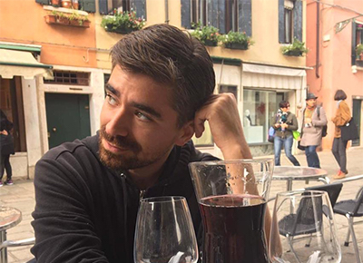

About Me

Christian Saxton is originally from Redmond, Washington. He studied English at Western Washington University before transitioning into the film industry, working in the camera department on a range of commercials and television shows, including Grimm and Leverage.
Taking advantage of an opportunity to face new challenges and diversify his skill set, he went on to work as a project manager and media specialist for ActivityConnection.com. After working extensively with the web development company that designed Activity Connection’s site, Christian decided to make the next exciting move in his career and is currently a full stack development student in the Coding Bootcamp at University of North Carolina Charlotte.